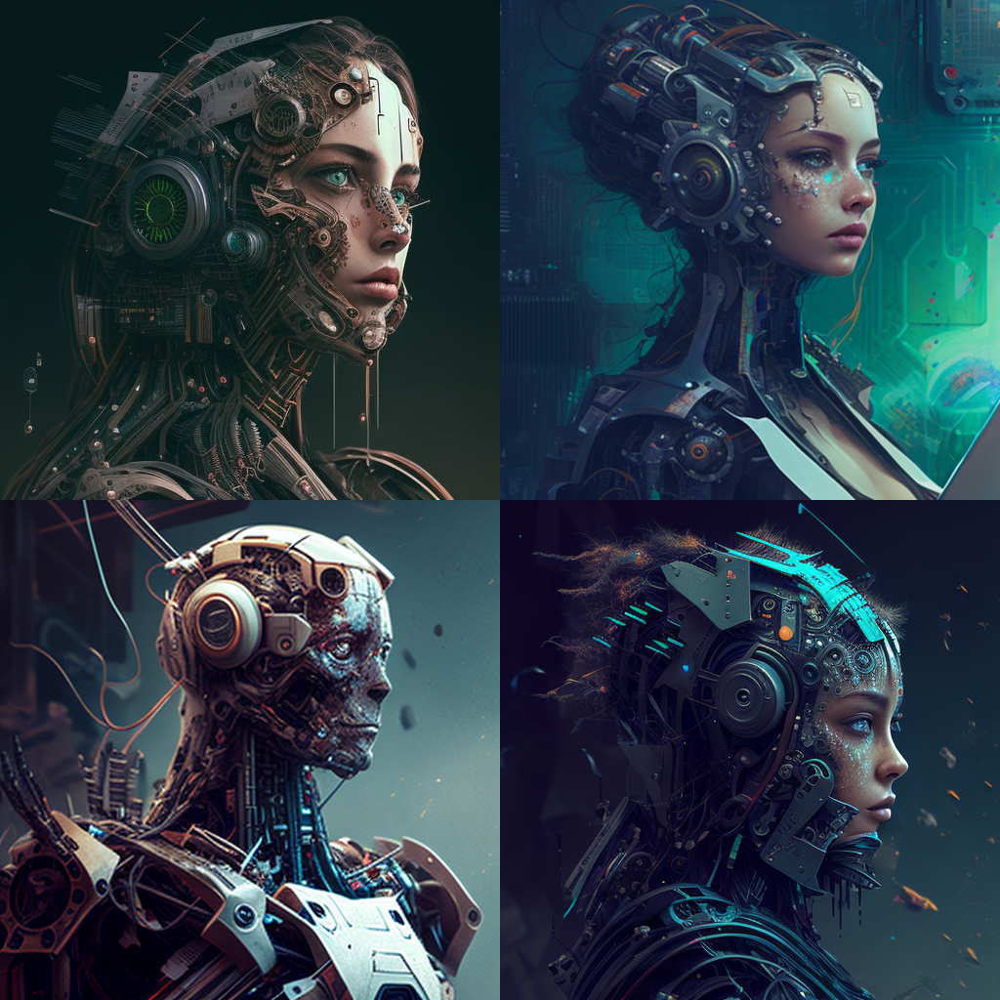
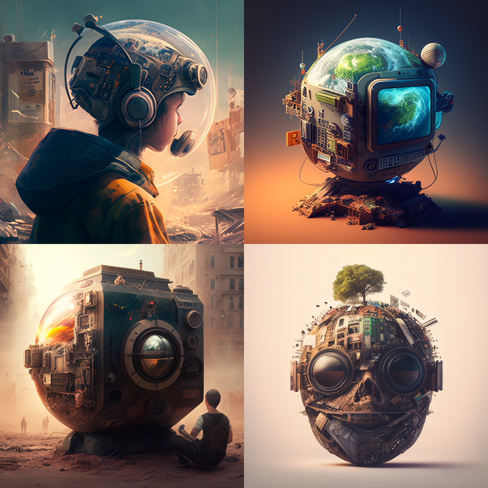

ABOUT PAGE
--Who am I?

I am currently a student at the Arab Open University, and I am looking to pursue a career in "webDev" , "blockChainDev" or "SoftwareDev". I have always been interested in computers and how they work, and I have been working on developing my skills in this area for some time now. I am confident in my ability to create beginner websites that are both aesthetically pleasing and functional, and I am eager to put my skills to use in a professional setting.
In my spare time, I enjoy spending time with my family and friends, playing video games, and reading. I am also a big fan of music, and I enjoy going to concerts and festivals whenever I can. I am a well-rounded individual with a strong work ethic, and I am confident that I will be a valuable asset to any team.

--What would I like to do in the future?
I would like to work as a software engineer or a web developer. Furthermore, I would also like to continue my education and get a master's degree in computer science. I want to work in a field that is constantly evolving and changing, and that is why I chose computer science as my major. I am excited to see what the future holds for me as a computer science major.
--What made Me pursue Computer Science?
When I was younger, I was always interested in computers and how they worked. Likewise, I would take apart my family's computer and try to put it back together, but I could never quite figure it out. This made me want to learn more about computers and eventually led me to pursue a degree in computer science. I'm constantly learning new things and challenging myself to solve complex problems. I'm grateful that I chose to pursue a career in computer science, and I would encourage anyone who is interested in computers to do the same.
--If you were a beginner in computer science, what would you recommend?

There are a few things that I recommend to beginners in computer science. The first is to find a good mentor. A mentor can help guide you through the early stages of learning computer science and can introduce you to concepts that you may not be familiar with. The second is to find a good online resource. There are a lot of free resources available online, and finding a few that you like can help you learn at your own pace. The third is to get involved in the community. There are a lot of great people in the computer science community, and getting involved can help you learn and make connections that can be beneficial in your career.
--As a computer science student, what was the one thing you regretted?
I regret not learning computer science sooner. I was always interested in computers and how they work, but I never took the time to learn about coding and computer science. I wish I had started sooner, so that I would be further along in my career by now.